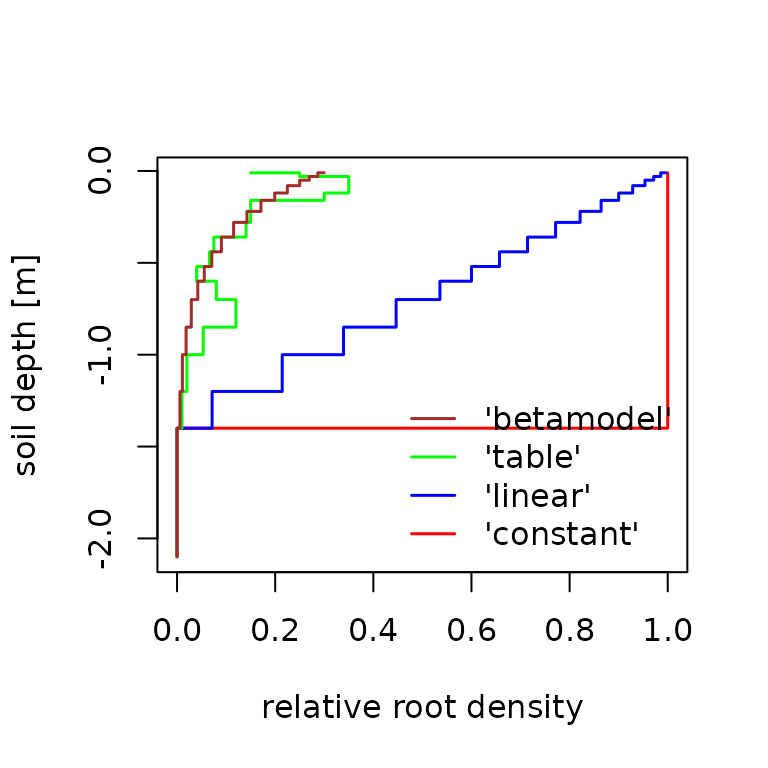

vignettes/LWFBrook90R-2-Options_Param.Rmd
LWFBrook90R-2-Options_Param.RmdThis vignette demonstrates the use of different model control option
setting (options_90-argument of runLWFB90())
and parameters (param_b90-argument).
Aside from the basic technical information of the simulation
(startdate, enddate, fornetrad,
prec_interval and correct_prec), the model
control options control the annual course of leaf area index
(lai_method), the phenology models to use
(budburst_method, leaffall_method), the input
and interpolations of annual stand properties
(standprop_input, standprop_interp,
use_growthperiod) and which root density depth distribution
function to use (root_method). The interplay of options and
parameters is shown briefly in the following paragraphs, by describing
how options and parameters are passed from the options_b90
and param_b90 arguments to the individual functions that
are called from within run_LWFB90().
For this purpose, we create basic lists of model control options and parameters, as well as soil and climate objects.
library(LWFBrook90R)
library(data.table)
options_b90 <- set_optionsLWFB90()
param_b90 <- set_paramLWFB90()The default parameter set (created with
set_paramLWFB90()) represents a deciduous forest stand,
without leafs in winter and maximum leaf area index in summer. The
maximum leaf area index is defined by the parameter
param_b90$maxlai, the minimum value in winter is internally
calculated as a fraction (param_b90$winlaifrac) of
param_b90$maxlai. The basic shape of the intra-annual leaf
area index dynamics can be selected by the option
options_b90$lai_method. The default setting
'b90' makes use of the parameters budburstdoy,
leaffalldoy, emergedur and
leaffalldur, that define the dates of budburst and
leaffall, and the durations of leaf unfolding and leaf shedding until
maxlai, and respectively winlaifrac in winter
are reached. Within run_LWFB90(), the parameters are passed
to make_seasLAI() that constructs the daily timeseries of
leaf area index development for a single year:
LAI_b90 <- make_seasLAI(method = options_b90$lai_method,
year = 2003,
maxlai = param_b90$maxlai,
winlaifrac = param_b90$winlaifrac,
budburst_doy = param_b90$budburstdoy,
leaffall_doy = param_b90$leaffalldoy,
emerge_dur = param_b90$emergedur,
leaffall_dur = param_b90$leaffalldur)make_seasLAI() also provides other shape functions that
require additional parameters. For example, the option
lai_method = 'linear' uses value pairs of day-of-year and
leaf area index as fraction of maxlai passed from
parameters param_b90$lai_doy and
param_b90$lai_frac. The doy/value-pairs are then used to
interpolate the intra-annual course of leaf area index to a daily time
series.
options_b90$lai_method <- "linear"
param_b90$lai_doy <- c(1,110,117,135,175,220,250,290,365)
param_b90$lai_frac <- c(0.1,0.1,0.5,0.7,1.2,1.2,1.0,0.1,0.1)
LAI_linear <- make_seasLAI(method = options_b90$lai_method,
year = 2003,
maxlai = param_b90$maxlai,
lai_doy = param_b90$lai_doy ,
lai_frac = param_b90$lai_frac)A third shape-option for the intra-annual variation of leaf area
index is called ‘Coupmodel’ and uses the interpolation method as
implemented in the ‘Coupmodel’ (Jansson and
Karlberg 2004). With lai_method ='Coupmodel, form
parameters for leaf unfolding and leaf fall (shp_budburst,
shp_leaffall), and the date when leaf area is at its
maximum (shp_optdoy) are required, in addition to the
parameters required by lai_method = 'b90'.
options_b90$lai_method <- "Coupmodel"
param_b90$shp_budburst <- 0.5
param_b90$shp_leaffall <- 5
param_b90$shp_optdoy <- 180
LAI_coupmodel <- make_seasLAI(method = options_b90$lai_method,
year = 2003,
maxlai = param_b90$maxlai,
budburst_doy = param_b90$budburstdoy,
leaffall_doy = param_b90$leaffalldoy,
shp_budburst = param_b90$shp_budburst,
shp_leaffall = param_b90$shp_leaffall,
shp_optdoy = param_b90$shp_optdoy)A plot of all three methods shows the roles of the different parameters:
Methods featured by make_seasLAI()
By passing a single value via param_b90$maxlai we used
the same maximum leaf area index for each year of the simulation period.
In order to incorporate between-year variation of the leaf area index,
we can simply assign vectors of values for each year of the simulation
period to any of the parameters used by function
make_seasLAI(). In the following example, we pass three
values for maxlai and shp_optdoy, to get
different seasonal courses of leaf area index for the three years of the
simulation period. Additionally, we add variation to the dates of
budburst, by assigning a vector of values to the parameter
budburstdoy.
years <- 2001:2003
param_b90$maxlai <- c(4,6,5)
param_b90$shp_optdoy <- c(210,180,240)
param_b90$shp_budburst <- c(3,1,0.3)
param_b90$budburstdoy <- c(100,135,121)
lai_variation <- make_seasLAI(method = options_b90$lai_method,
year = years,
maxlai = param_b90$maxlai,
budburst_doy = param_b90$budburstdoy,
leaffall_doy = param_b90$leaffalldoy,
shp_budburst = param_b90$shp_budburst,
shp_leaffall = param_b90$shp_leaffall,
shp_optdoy = param_b90$shp_optdoy)Options and parameters affecting interannual variation of leaf area index.
Beside the obvious between-year variation of maximum leaf area index,
we can also see the effect of the shape parameter for the leaf unfolding
phase shp_budburst. Values greater 1 result in concave,
values below 1 in convex functions, while values of 1 give linear
progressions. The budburst day-of-year is varying as specified in the
parameters, but can also be estimated using temperature based phenology
models. By selecting other settings than the default
options_b90$budburst_method = 'fixed' and
options_b90$leaffall_method = 'fixed', the
vegperiod() function of the ‘vegperiod’-Package is called
from within run_LWFB90. budburstdoy and/or
leaffalldoy are then calculated for each year from the
climate data using the desired methods. See vegperiod for a
list of available models. The estimated values for
budburstdoy and/or leaffalldoy can be found in
the param_b90 list element of the results object after the
simulation.
height, sai,
densef)
Like the leaf area index parameters and budburst/leaffall-dates, it
is also possible to provide vectors of values for stand height
(height), stem area index (sai), and stand
density (densef) to generate between-year variation of
stand characteristics. From the yearly values, daily values are
interpolated using the function approx_standprop(). The
approx.method- argument of the function defines how to
interpolate the yearly values passed by y. Within
run_LWFB90(), the option
options_b90$standprop_interp is passed to the
approx.method- argument of approx_standprop.
The default interpolation method
standprop_interp = 'constant' results in a yearly changing
step function, while standprop_interp = 'linear'
interpolates the values:
# constant 'interpolation'
options_b90$standprop_interp <- 'constant'
param_b90$height <- c(20.2,20.8,21.3)
simyears <- 2002:2003
height_c <- approx_standprop(x_yrs=years,
y = param_b90$height,
approx.method = options_b90$standprop_interp)
# linear interpolation
options_b90$standprop_interp <- 'linear'
param_b90$height_ini <- 19.1
height_l <- approx_standprop(x_yrs=years,
y = param_b90$height,
y_ini = param_b90$height_ini,
approx.method = options_b90$standprop_interp)For linear interpolation, additional parameters
height_ini, sai_ini, densef_ini
have to be provided to run_LWFB90() via the
param_b90-argument. These parameters define the values at
the beginning of the simulation, to which the value of the first year is
interpolated to. By default, the yearly values are interpreted to be
valid at December 31st of the respective years, so that the interpolated
timeseries are linearly increasing or decreasing during the whole year.
In order to constrain the interpolation to the growth period only, the
option options_b90$use_growthperiod was introduced, which
requires the arguments startdoy and enddoy,
when set to TRUE. Then, values decrease or increase between
budburst and leaffall only, and remain constant during winter.
options_b90$use_growthperiod <- TRUE
height_l_gp <- approx_standprop(x_yrs = years,
y = param_b90$height,
y_ini = param_b90$height_ini,
use_growthperiod = options_b90$use_growthperiod,
startdoy = param_b90$budburstdoy,
enddoy = param_b90$leaffalldoy,
approx.method = options_b90$standprop_interp)The following plot explains the differences between the interpolated timeseries of stand height using the different options and parameters:
Interpolated stand height derived from parameters using approx_standprop()
Another option for incorporating between-year variation of plant
properties is to provide a data.frame with yearly values of
height, maxlai, sai,
densef and age as list item
standprop_table in param_b90. To take effect,
the option options_b90$standprop_input has to be set to
'table'. In this case, the values passed via parameters
height, sai, densef and
age_ini are ignored. As maxlai is also
provided via the table, the maxlai value from parameters is
ignored as well, while the other parameters that affect intra-annual
leaf area development (e.g., shp_budburst) are still
active.
For demonstration purposes we use the table
slb1_standprop, that contains observed stand data of the
Solling Beech Experimental site from 1966 to 2014, along with estimated
leaf and stem area index derived using allometric functions. For
creating the daily timeseries of stand properties, we use
run_LWFB90(), and make use of the option to not run the
model (run = FALSE), but only return the model input.
#Extend simulation period
options_b90$startdate <- as.Date("1980-01-01")
options_b90$enddate <- as.Date("1999-12-31")
soil <- cbind(slb1_soil, hydpar_wessolek_tab(texture = slb1_soil$texture))
#set up options for table input
options_b90$standprop_input <- 'table'
param_b90$standprop_table <- slb1_standprop
# Set up dynamic budburst and leaf fall
options_b90$budburst_method <- "Menzel"
options_b90$leaffall_method <- "vonWilpert"
param_b90$budburst_species <- "Fagus sylvatica"
#run LWF-Brook90 without simulation
standprop_daily <- run_LWFB90(options_b90 = options_b90,
param_b90 = param_b90,
climate = slb1_meteo,
soil = soil,
output = output,
run = FALSE)$standprop_dailyStand properties generated using table input of annual stand characteristics
The root depth density depth distribution can either be provided in
the column rootden of the soil- argument of
run_LWFB90(), or can be derived from parameters using the
function make_rootden(). In order to use root density as
specified in the soil data, the root_method element of the
options_b90-list has to be set to 'soilvar'.
Other method names are passed to make_rootden(). Currently,
the function provides four methods to assign values of relative root
density to a vector of soil depths. The default method
'betamodel' uses the model of Gale & Grigal (-Gale and Grigal (1987)), which is of the form
, where
is the cumulative root fraction down to soil depth
and
is the depth coefficient. Larger values of
correspond to a greater proportion of roots in deeper soil layers:
For larger values of
,
the root density will reach zero only in very deep soil layers. In order
to set the root density to zero at any desired soil depth, the parameter
maxrootdepth was defined. With this parameter, the root
density is set to zero in all soil layers that lie deeper than
maxrootdepth. Within run_LWFB90(), the
function is called in the following way:
param_b90$maxrootdepth <- -1.4
options_b90$root_method <- "betamodel"
roots_beta <- make_rootden(soilnodes = c(max(slb1_soil$upper), slb1_soil$lower),
maxrootdepth = param_b90$maxrootdepth,
beta = param_b90$betaroot,
method = options_b90$root_method)A second option to define the root distribution for the soil layers
is to provide value pairs of soil depth and root density in a data.frame
and assign it to the rootden_table-entry in
param_b90. As an example, we set up a hypothetical root
density depth distribution:
options_b90$root_method <- 'table'
param_b90$rootden_table <- data.frame(
upper = c(0.03,0,-0.02, -0.15, -0.35, -0.5, -0.65,-0.9,-1.1,-1.3),
lower = c(0,-0.02, -0.15, -0.35, -0.5, -0.65,-0.9,-1.1,-1.3,-1.6),
rootden = c(10,15, 35, 15, 7.5, 4, 12, 2, 2, 0))
roots_table <- make_rootden(soilnodes = c(max(slb1_soil$upper), slb1_soil$lower),
method = options_b90$root_method,
rootdat = param_b90$rootden_table)A third option generates a linear root density depth distribution,
with the maximum at the uppermost soil layer and a root density of 0 at
maxrootdepth. If the parameter relrootden is
provided, the first element of the vector is used as the maximum,
otherwise the interpolation is made between 0 and 1. The last option
returns a uniform root distribution, with the first vector-element of
relrootden (if provided) as value for all layers down to
maxrootdepth.
options_b90$root_method <- 'linear'
roots_linear <- make_rootden(soilnodes = c(max(slb1_soil$upper), slb1_soil$lower),
maxrootdepth = param_b90$maxrootdepth,
method = options_b90$root_method)
options_b90$root_method <- 'const'
roots_constant <- make_rootden(soilnodes = c(max(slb1_soil$upper), slb1_soil$lower),
maxrootdepth = param_b90$maxrootdepth,
method = options_b90$root_method)